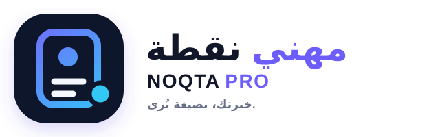
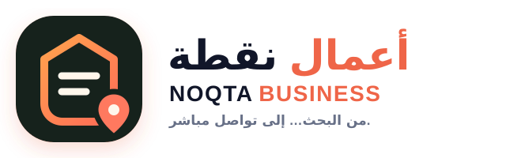

مهني سهل الاختبار
يمكن صنع 3 نماذج قوية بسرعة والوصول إلى خريجين ومستقلين، لكن السعر والتكرار عادةً محدودان، والـCV وحده خدمة سهلة التقليد.
لا تجعل «نقطة» محصورة بالـCV، ولا تطلقها كوكالة تصنع أي شيء لأي أحد. ابنِها كعلامة للحضور الرقمي الخفيف، وابدأ بخطّين واضحين تحت اسم واحد.
المشكلة ليست في تقديم خدمتين؛ المشكلة في خلط جمهورين ووعدين مختلفين داخل الإعلان نفسه.
يمكن صنع 3 نماذج قوية بسرعة والوصول إلى خريجين ومستقلين، لكن السعر والتكرار عادةً محدودان، والـCV وحده خدمة سهلة التقليد.
الصفحة قد تتوسع إلى تحديثات واستضافة وصيانة وإحالات، لكن صاحب العمل يحتاج ديمو واضحاً وثقة ومتابعة أكثر قبل الشراء.
اختر قطاعاً واحداً للاختبار: مطاعم صغيرة، عيادات، صالونات، أو خدمات منزلية. لكل قطاع مشكلة وCTA مختلفان.
بيانات 2025 المتاحة تضع انتشار الإنترنت عند 35.8%، ومتوسط سرعة الإنترنت الثابت عند 3.40 Mbps. كما يشير البنك الدولي إلى ضعف الدخل وأزمة سيولة؛ لذلك لا تبنِ العرض على موقع ثقيل، دفع إلكتروني فقط، أو سعر غير قابل للتثبيت.
لا تنشئ حسابين من اليوم الأول. استخدم حساب «نقطة» واحداً، لونين للهايلايت، وصفحة خدمة مستقلة لكل خط.
كل الشعارات الموجودة في المشروع مجمّعة هنا. اضغطوا على البطاقة لحفظ الاختيار؛ الضغط عليها مرة ثانية يلغي الاختيار.


نحوّل خبرتك إلى ملف ورابط يشرحان قيمتك بسرعة.
نحوّل البحث عن مشروعك إلى تواصل أو زيارة أو طلب واضح.
مهني: بطاقة ملف + نقطة واضحة + حركة للأمام. أعمال: واجهة رقمية + موقع + طريق مباشر. لا يوجد رمز مطعم، لذلك الهوية قابلة للتوسع.
هذه الدرجات نقطة بداية نوعية. آلة الاختبار أسفلها تستبدل الافتراض بأرقامكم الفعلية خلال 30 يوماً.
| المعيار | نقطة مهني | نقطة أعمال | المعنى العملي |
|---|---|---|---|
| سهولة البدء | 5/5 | 3/5 | نماذج مهني أسرع وأقل اعتماداً على بيانات العميل. |
| سهولة الوصول للعميل | 4/5 | 2/5 | التاجر يحتاج ثقة وديمو واتصالاً مباشراً غالباً. |
| قيمة الصفقة | 2/5 | 4/5 | الأعمال تستفيد من إضافات وصيانة وتحديثات. |
| تكرار الإيراد | 2/5 | 4/5 | تحديث CV موسمي؛ تحديث أعمال وتشغيلها أكثر تكراراً. |
| سهولة الدعم | 4/5 | 2/5 | كلما اقتربت الصفحة من الطلبات اليومية زاد الدعم. |
| التميز أمام البدائل | 2/5 | 3/5 | Canva وAI يضغطان مهني؛ حلول QR المحلية موجودة أيضاً. |
استخدموا نفس تعريف «تواصل»، «مهتم»، و«مدفوع» للفكرتين. الإيراد بأي وحدة مرجعية ثابتة تختارونها.
وسّع الخط الذي يحقق 3 عملاء مدفوعين على الأقل مع إيراد/ساعة أفضل وطلب إحالة أو تحديث. إذا لم يصل أي خط إلى ذلك، عدّل العرض والجمهور قبل تعديل الشعار.
لا تعرض سعراً وحيداً لكل عميل. اعرض نطاقاً بعد استلام المحتوى، وثبّت العملة المرجعية وصلاحية العرض وما يشمله التعديل.
الـCV ليس المنتج النهائي؛ وضوح القيمة هو المنتج.
لمن يملك خبرة ومحتوى جاهزاً ويحتاج إعادة بناء العرض.
للخريج أو المستقل الذي يحتاج ملفاً ورابطاً متناسقين.
للمستقل أو الاستشاري الذي يبيع خبرته مباشرة.
ابدأ بمعلومة أو إجراء واضح، لا بنظام إدارة كامل.
لخدمة محلية تحتاج مكاناً واحداً للمعلومات.
لمطعم، عيادة، صالون، أو متجر يريد إجراءً قابلاً للقياس.
إضافة شهرية اختيارية بعد إطلاق الصفحة.
علّموا البنود المكتملة. التقدم محفوظ في المتصفح، ويمكن الرجوع إليه في الاجتماع التالي.
الهدف: أن يفهم شخص غريب الخدمة خلال 10 ثوانٍ.
لا تسوقوا قبل وجود أمثلة تشبه العميل الحقيقي.
استخدموا عرض Pilot محدوداً، لا عملاً مجانياً كاملاً.
الهدف: تقليل وقت التنفيذ مع الحفاظ على نتيجة واضحة.
الهدف: قناة بيع واحدة قابلة للتكرار وعرض واضح.
النشر يبني الثقة، لكن التواصل المخصص والإحالات يصنعان المبيعات الأولى. لا تشتروا إعلانات قبل معرفة أي عرض يحوّل.
| الأسبوع | السبت | الاثنين | الأربعاء | نشاط البيع |
|---|---|---|---|---|
| 1 — تعريف | لماذا نقطة؟ | قبل/بعد مهني | ديمو صفحة نشاط | 10 مقابلات قصيرة لكل جمهور |
| 2 — مشكلة | خطأ في CV | معلومة ضائعة = زبون متردد | ريل سرعة الموبايل | 50 تواصلاً مستهدفاً موزعاً |
| 3 — دليل | دراسة حالة مهني | جولة داخل صفحة أعمال | كيف نعمل؟ | إرسال عروض Pilot للمهتمين |
| 4 — تحويل | لمن كل باقة؟ | اعتراض السعر | نتيجة/شهادة | متابعة + طلب إحالة + مراجعة الأرقام |